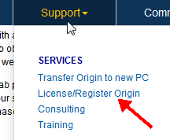

Administratortipps: Bevor Sie Origin an Ihre Anwender verteilen...
Multi-User-NodeLocked-AdminTips
Für rechnergebundene Gruppenlizenzen (Node-Locked) bietet OriginLab einen Kontrollmechanismus. So wird festgelegt, welche Web-Mitgliedschaftskonten von OriginLab eine Lizenz für die Software erhalten können, die mit Ihrer Seriennummer installiert ist. Dieser Mechanismus soll die unautorisierte Nutzung Ihrer Seriennummer verhindern und sicherstellen, dass alle von Ihrer Organisation gekauften Lizenzen nur autorisierten Mitgliedern Ihrer Organisation zur Verfügung stehen.
Lizenzzugriffsbeschränkungen auf der OriginLab-Webseite einrichten
Als Origin-Administrator befolgen Sie bitte die folgenden Schritte, um Ihre Seriennummer zu registrieren und die Beschränkungen des Lizenzzugriffs für Ihre Seriennummer einzurichten. Bitte schließen Sie diesen Vorgang ab, bevor Sie Ihre Benutzer darüber benachrichtigen, dass die Origin-Software für sie verfügbar ist.
 Sehen Sie sich das Video-Tutorial an - Erste Schritte mit der rechnergebundenen Gruppenlizenz (Node-Locked)
Sehen Sie sich das Video-Tutorial an - Erste Schritte mit der rechnergebundenen Gruppenlizenz (Node-Locked)
- Halten Sie Ihre Seriennummer und den zugehörigen Zugangscode griffbereit. Sie finden diese auf Ihrem Lizenzzertifikat sowie auf der Hülle der Origin-DVD und innen auf dem Deckblatt des Handbuchs.
- Gehen Sie zur Seite http://www.originlab.com/.
- Klicken Sie auf den Link "Origin lizenzieren/registrieren" im Menü Support.
 - Melden Sie sich an, wenn Sie bereits über ein Konto zur Web-Mitgliedschaft verfügen, oder erstellen Sie sich ggf. ein Konto.
- Wenn Sie zuvor bereits eine Seriennummer registriert haben, wird Ihnen die Webseite Ihrer Produktregistrierung angezeigt. In diesem Fall klicken Sie auf die Schaltfläche Registrierung oder Generierung einer Lizenzdatei.
- Aktivieren Sie die Option "Ich möchte meine Origin-Software registrieren" und klicken Sie auf Weiter.
- Geben Sie Ihre Version ein und wählen Sie bzw. geben Sie Ihre Seriennummer ein. Klicken Sie auf Weiter.
- Sie sehen jetzt eine Seite, auf der Sie gebeten werden, den Zugangscode (Access Code) einzugeben und eine E-Mail-Adresse oder ein E-Mail-Fragment. Nach diesem Schritt können Sie zusätzliche E-Mail-Adressen oder E-Mail-Fragmente je nach Bedarf eingeben (siehe Schritt 9 unten).
- Wenn Sie die einzige Person sein wollen, die Lizenzen für Ihre Seriennummer abrufen kann, geben Sie Ihre vollständige E-Mail-Adresse ein, d.h. die E-Mail-Adresse, die in Ihrem Konto hinterlegt ist.
- Wenn Sie einzelnen Personen erlauben möchten, Lizenzen für Ihre Seriennummer abzurufen, geben Sie Ihre vollständige E-Mail-Adresse ein, d.h. die E-Mail-Adresse, die in Ihrem Konto hinterlegt ist. Nachdem dieser Schritt beendet ist, können Sie zusätzliche vollständige E-Mail-Adressen für von Ihnen zugelassene Anwender hinzufügen (siehe den folgenden Schritt). Sie können jederzeit zur OriginLab-Webseite zurückkehren, um diese E-Mail-Adressen hinzuzufügen, vorausgesetzt, dass Sie die E-Mail-Adresse des Anwenders hinzufügen, bevor dieser versucht, eine Lizenz abzurufen.
- Wenn Sie den Lizenzzugriff auf die Mitglieder Ihrer Organisation beschränken möchten, geben Sie ein Fragment der E-Mail-Adresse ein, das für Ihre Organisation eindeutig ist.

- Um zusätzliche E-Mail-Adressen bzw. E-Mail-Fragmente einzugeben, nachdem Sie erfolgreich die/das erste eingegeben haben,
- klicken Sie auf Ihren Benutzernamen, der sich oben rechts von der OriginLab-Webseite befindet (oder melden Sie sich an, wenn Sie zu der Webseite zurückkehren und noch nicht angemeldet sind).
- Klicken Sie dann auf Ihrer "Willkommens"-Webseite auf den Link für die Beschränkungen des Lizenzzugriffs.

- Befolgen Sie die Anweisungen auf der Seite, die aufgerufen wird, um zusätzliche E-Mail-Adressen bzw. -Fragmente hinzuzufügen.
| Hinweis: Sie sind berechtigt, für Ihr Origin ein Upgrade auf die neueste Version während der Laufzeit der Softwarepflege durchzuführen. Es wird empfohlen, dass Sie als Origin-Administrator gleich nach dem Release die neue Version registrieren und die Lizenzzugriffsbeschränkungen einrichten. Sobald Sie dies getan haben, können Sie dei neue Version jederzeit an Ihre Benutzer verteilen.
|
Anweisungen zum Bereitstellen des Origin-Lizenzpakets für Ihre Benutzer
Wenn Sie Origin an Ihre Benutzer verteilen, müssen Sie zusätzlich zu dem Installationsprogramm und zu der Seriennummer auch den Zugangscode zur Verfügung stellen, da dieser während des Lizenzabrufs eingegeben werden muss. Sie müssen den Benutzern außerdem mitteilen, dass Sie sich während des Lizenzabrufs auf der OriginLab-Webseite anmelden bzw. ein Konto für die OriginLab-Webseite erstellen müssen, sollten sie noch über keines verfügen. Informieren Sie die Benutzer darüber, dass sie die Kontaktdaten Ihrer Organisation, einschließlich E-Mail-Adresse, eingeben sollten, wenn Sie sich auf der OriginLab-Webseite registrieren.
Wenn sie bereits ein Konto haben, dies aber nicht die E-Mail-Adresse der Organisation enthält (beispielsweise eine gmail-Adresse verwendet wurde), sagen Sie ihnen, dass sie zuerst ihr Konto mit den Organisationsdaten aktualisieren müssen. Sie müssen diese Informationen aktualisieren, indem Sie sich bei der Webseite anmelden und auf den Link Meine Profildetails anzeigen/aktualisieren klicken.

Softwareverteilung für mehrere Benutzer
Es gibt viele Möglichkeiten, Origin an Anwender zu verteilen.
Weiteres